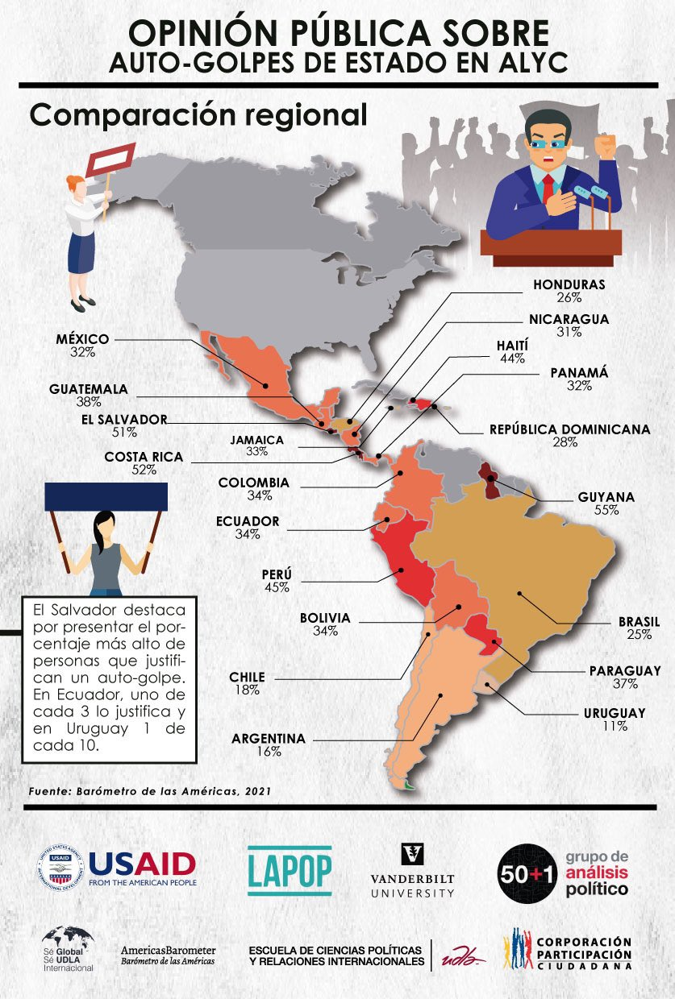

Introducción
En esta sección se hará una introducción a una herramienta muy usada
en la actualidad: la presentación de datos en forma de mapas. Veremos la
manera de calcular los promedios o el porcentaje de alguna variable de
interés y presentar las variaciones por país en un mapa con diferentes
tonalidades de color.
Un ejemplo de este tipo de gráficos es el presentado en este tweet
que publicó nuestro socio en Ecuador Participación
Ciudadana. Uno de estos mapas es el siguiente:

Este mapa muestra el porcentaje de personas que justifica un
auto-golpe en cada país usando los datos de la ronda 2021 del Barómetro
de las Américas. Colores más rojos indican un mayor porcentaje y colores
más pastel indican un menor porcentaje.
En esta sección veremos cómo se puede replicar este tipo de mapas,
para lo cual primero se tiene que producir la información desde las
bases de datos del Barómetro de las Américas.
Sobre la base de datos del Barómetro de las Américas 2021
Los datos que vamos a usar deben citarse de la siguiente manera:
Fuente: Barómetro de las Américas por el Proyecto de Opinión Pública de
América Latina (LAPOP), wwww.LapopSurveys.org. Pueden descargar los
datos de manera libre aquí.
Se recomienda limpiar el Environment antes de iniciar esta sección.
En este documento nuevamente se carga una base de datos de la ronda 2021
en formato RData. Este formato es eficiente en términos de espacio de
almacenamiento. Mediante la librería rio y el comando
import se puede importar esta base de datos desde este
repositorio, usando el siguiente código. En este caso, no eliminamos las
observaciones de Canadá o Estados Unidos, países que no muestran datos
en el mapa anterior, pero donde se realizó la pregunta sobre
auto-golpes.
library(rio)
lapop21 = import("lapop21.RData")
Para producir el mapa, lo primero es calcular el porcentaje de
personas que justifica un auto-golpe por país. El gráfico 1.7 del
reporte El
Pulso de la Democracia de la ronda 2021 presenta estos datos.

En la sección sobre intervalos
de confianza vimos cómo construir esta información usando la base de
datos del Barómetro de las Américas de la ronda 2021.
Preparando los datos
La variable para construir este gráfico es “jc15a” que está fraseada:
¿Cree usted que cuando el país enfrenta momentos muy difíciles, se
justifica que el presidente del país cierre el Congreso/Asamblea y
gobierno sin Congreso/Asamblea? Las opciones de respuesta son:
Sí se justifica
No se justifica
Para calcular el porcentaje, se transforma la variable de tal manera
que los que justifican un cierre del congreso se les asigna 100 y los
que no, el valor de 0. Esta transformación se guarda en una nueva
variable “jc15ar”.
lapop21$jc15ar <- car::recode(lapop21$jc15a, "1=100; 2=0")
table(lapop21$jc15ar)
##
## 0 100
## 17360 6951
Luego, requerimos calcular el porcentaje de personas que toleran un
golpe ejecutivo por cada país. Cuando se carga la base de datos del
Barómetro de las Américas, las variables son generalmente cargadas como
de tipo “numérico” (num en lenguaje de R).
Para poder trabajar con estas variables en esta sección, requerimos
transformar la variable país a una variable categórica (factor en
lenguaje de R). Esto se hace con el comando as.factor. A
continuación, se etiqueta la variable con el comando
levels.
lapop21$pais = as.factor(lapop21$pais)
levels(lapop21$pais) <- c("México", "Guatemala", "El Salvador", "Honduras",
"Nicaragua","Costa Rica", "Panamá", "Colombia",
"Ecuador", "Bolivia", "Perú", "Paraguay", "Chile",
"Uruguay", "Brasil", "Argentina", "Rep. Dom.",
"Haití", "Jamaica", "Guyana","Estados Unidos", "Canada")
table(lapop21$pais)
##
## México Guatemala El Salvador Honduras Nicaragua
## 2998 3000 3245 2999 2997
## Costa Rica Panamá Colombia Ecuador Bolivia
## 2977 3183 3003 3005 3002
## Perú Paraguay Chile Uruguay Brasil
## 3038 3004 2954 3009 3016
## Argentina Rep. Dom. Haití Jamaica Guyana
## 3011 3000 3088 3121 3011
## Estados Unidos Canada
## 1500 2201
Auto-golpes por país
En R existen muchos caminos para llegar al mismo resultado. Para
calcular el porcentaje de personas que tolera un golpe ejecutivo se
puede usar el tidyverse. Esta es una forma de escribir códigos que
incluye el operador %>%. En este caso se activa la librería “dplyr”.
Luego, se crea un objeto “golpe” donde se guardará información del
dataframe “lapop21”. Con este dataframe, se calcularán resultados
agrupados por país, con el comando group_by(). Finalmente,
se calcula la media de la variable “jc15ar” con el comando
`summarise_at.
library(dplyr)
##
## Attaching package: 'dplyr'
## The following objects are masked from 'package:stats':
##
## filter, lag
## The following objects are masked from 'package:base':
##
## intersect, setdiff, setequal, union
golpe = lapop21 %>%
group_by(pais) %>%
summarise_at(vars(jc15ar), list(golpe=mean), na.rm=T)
El objeto “golpe” contiene la información de la media (es decir, el
porcentaje) de personas que toleran los golpes ejecutivos por país.
Algunas filas están vacías porque esa pregunta no se realizó en ese
país. Es el caso de Costa Rica y Guyana.
Otra opción es usar el comando compmeans de la librería
descr. Este comando nos permite calcular la media, el
número de observaciones y la desviación estándar de una variable por
grupos de otra variable. Incluso, permite este cálculo incluyendo un
factor de ponderación.
Estos cálculos se guardan en un data frame “tabla” con el comando
as.data.frame. Luego de etiqueta las columnas de datos con
el comando colnames, se incluye una columna con los nombres
de los países y, finalmente, se elimina la última fila, donde se calcula
la media (es decir, el porcentaje) para toda la base de datos, que no
requerimos.
library(descr)
tabla <- as.data.frame(
compmeans(lapop21$jc15ar, lapop21$pais, lapop21$weight1500, plot=FALSE))
## Warning in compmeans(lapop21$jc15ar, lapop21$pais, lapop21$weight1500, plot =
## FALSE): 40056 rows with missing values dropped
varnames <- c("media_golpe", "n_golpe", "sd_golpe")
colnames(tabla) <- varnames
tabla$pais <- row.names(tabla)
tabla <- tabla[-23, ]
Finalmente, requerimos agregar una columna que permita unir (hacer el
merge) de los datos de la “tabla” con los datos vectoriales para poder
producir el mapa. Llamaremos a esta variable “OBJECTID” y tendrá una
codificación que luego veremos viene de los archivos vectoriales de los
mapas, pero que sigue un orden alfabético. Luego, de incluir estos
datos, la “tabla” se ordena de menor a mayor en esos datos de
“OBJECTID”. Con este reordenamiento, los países quedan en orden
alfabético.
Vemos en el código que tenemos unas líneas con #. Si agregáramos
estos códigos tendríamos un orden alfebético con todos los países de
América (incluidos Barbados, Bahamas, Belice, Granada, Surinám, entre
otros). Estas líneas pertenecen a países que no están incluidos en el
Barómetro de las Américas 2021.
Sin embargo, veremos que estos países sí figuran en los datos
vectoriales del mapa.
tabla$OBJECTID <- NA
tabla <- within(tabla, {
OBJECTID[pais=="Argentina"] <- 1
# OBJECTID[pais=="Barbados"]<- 2
# OBJECTID[pais=="Bahamas"]<- 3
# OBJECTID[pais=="Belice"]<-4
OBJECTID[pais=="Bolivia"]<-5
OBJECTID[pais=="Brasil"]<-6
OBJECTID[pais=="Canada"]<-7
OBJECTID[pais=="Chile"]<-8
OBJECTID[pais=="Colombia"]<-9
OBJECTID[pais=="Costa Rica"]<-10
OBJECTID[pais=="Dominica"]<-11
OBJECTID[pais=="Rep. Dom."]<-12
OBJECTID[pais=="Ecuador"]<-13
OBJECTID[pais=="El Salvador"]<-14
# OBJECTID[pais=="Granada"]<-15
OBJECTID[pais=="Guatemala"]<-16
OBJECTID[pais=="Guyana"]<-17
OBJECTID[pais=="Haití"]<-18
OBJECTID[pais=="Honduras"]<-19
OBJECTID[pais=="Jamaica"]<-20
OBJECTID[pais=="México"]<-21
#OBJECTID[pais=="Surinam"]<-22
OBJECTID[pais=="Nicaragua"]<-23
OBJECTID[pais=="Paraguay"]<-24
OBJECTID[pais=="Perú"]<-25
OBJECTID[pais=="Panamá"]<-26
#OBJECTID[pais=="San Cristobal y Nieves"]<-27
#OBJECTID[pais=="Santa Lucía"]<-28
#OBJECTID[pais=="Trinidad y Tobago"]<-29
OBJECTID[pais=="Uruguay"]<-30
#OBJECTID[pais=="San Vicente y las Granadinas"]<-31
#OBJECTID[pais=="Venezuela"]<-32
OBJECTID[pais=="Estados Unidos"]<-33
})
tabla <- tabla[order(tabla$OBJECTID),]
Datos vectoriales para mapas
Los archivos para producir mapas son capas vectoriales en formato
EESRI Shapefile (.shp). Existen varios repositorios en la web donde se
pueden encontrar los archivos requeridos para producir mapas. Por
ejemplo, esta web
tiene como libre descarga las capas de los países de América.
Cuando se descarga esta información y se descomprime, se crea una
carpeta que incluye varios archivos. Todos esos archivos son necesarios
para crear el mapa y deben copiarse en el directorio de trabajo. De
estos archivos, la capa vectorial que grafica el mapa se llama
“América.shp”.
Para poder leer estos datos vectoriales en R también hay múltiples
maneras. Una de ellas es usando la librería sf. Esta
librería incluye el comando st_read que permite leer esta
información y luego trabajarla con ggplot. Esta información
se guarda en un objeto “al”, que produce una tabla de 53 observaciones y
2 variables. Las 53 observaciones corresponden a todos los países de las
Américas, que incluye, por ejemplo, a Aruba, Antigua y Barbuda, etc. La
primera columna de este objeto contiene el nombre de los paises y la
segunda la geometría para dibujar el mapa.
library(sf)
## Linking to GEOS 3.9.1, GDAL 3.2.3, PROJ 7.2.1; sf_use_s2() is TRUE
al = st_read("Americas.shp")
## Reading layer `Americas' from data source
## `/Users/Arturo/Documents/GitHub/BarometroEdu_Web/Americas.shp'
## using driver `ESRI Shapefile'
## Simple feature collection with 53 features and 1 field
## Geometry type: MULTIPOLYGON
## Dimension: XY
## Bounding box: xmin: -186.5396 ymin: -58.49861 xmax: -12.15764 ymax: 83.6236
## Geodetic CRS: WGS 84
Como el Barómetro de las Américas 2021 no incluye información de
todos estos países y para tener la misma lista de países que aparecen en
la “tabla”, vamos a eliminar las observaciones de los países que no
requerimos.
al <- al[-c(1, 2, 4, 5, 6, 7, 8, 13, 16, 17, 21, 22, 23, 24, 25, 31, 32, 34, 39, 40, 41, 42, 43, 44, 45, 47, 48, 49, 50, 51, 52), ]
Con esta eliminación, el objeto “al” solo contiene observaciones de
los países incluidos en el Barómetro y que coinciden con los que están
en la “tabla”.
De la misma manera que en la “tabla”, se tiene que añadir en el
objeto “al” una columna de datos “OBJECTID” que coincida con la que
tenemos en “tabla” y que permita hacer el merge. Vemos que estos códigos
incluyen líneas con # de países que no están en el Barómetro.
al$OBJECTID <- NA
al <- within(al, {
OBJECTID[COUNTRY=="Argentina"] <- 1
# OBJECTID[COUNTRY=="Barbados"]<- 2
# OBJECTID[COUNTRY=="Bahamas"]<- 3
# OBJECTID[COUNTRY=="Belice"]<-4
OBJECTID[COUNTRY=="Bolivia"]<-5
OBJECTID[COUNTRY=="Brazil"]<-6
OBJECTID[COUNTRY=="Canada"]<-7
OBJECTID[COUNTRY=="Chile"]<-8
OBJECTID[COUNTRY=="Colombia"]<-9
OBJECTID[COUNTRY=="Costa Rica"]<-10
# OBJECTID[COUNTRY=="Dominica"]<-11
OBJECTID[COUNTRY=="Dominican Republic"]<-12
OBJECTID[COUNTRY=="Ecuador"]<-13
OBJECTID[COUNTRY=="El Salvador"]<-14
# OBJECTID[COUNTRY=="Granada"]<-15
OBJECTID[COUNTRY=="Guatemala"]<-16
OBJECTID[COUNTRY=="Guyana"]<-17
OBJECTID[COUNTRY=="Haiti"]<-18
OBJECTID[COUNTRY=="Honduras"]<-19
OBJECTID[COUNTRY=="Jamaica"]<-20
OBJECTID[COUNTRY=="Mexico"]<-21
#OBJECTID[COUNTRY=="Surinam"]<-22
OBJECTID[COUNTRY=="Nicaragua"]<-23
OBJECTID[COUNTRY=="Paraguay"]<-24
OBJECTID[COUNTRY=="Peru"]<-25
OBJECTID[COUNTRY=="Panama"]<-26
#OBJECTID[COUNTRY=="San Cristobal y Nieves"]<-27
#OBJECTID[COUNTRY=="Santa Lucía"]<-28
#OBJECTID[COUNTRY=="Trinidad y Tobago"]<-29
OBJECTID[COUNTRY=="Uruguay"]<-30
#OBJECTID[COUNTRY=="San Vicente y las Granadinas"]<-31
#OBJECTID[COUNTRY=="Venezuela"]<-32
OBJECTID[COUNTRY=="United States"]<-33
})
al <- al[order(al$OBJECTID),]
Ahora, vemos a unir la información en un nuevo objeto “al_datos”.
Esto lo hacemos con el comando left_join del tidyverse. Se
indica que al objeto “al” se le añadan los datos de “tabla”. Por defecto
el código identifica una variable de unión que es “OBJECTID”.
al_datos <- al %>%
left_join(tabla)
## Joining, by = "OBJECTID"
En este nuevo objeto tenemos los datos vectoriales para crear el mapa
y los datos del Barómetro del porcentaje de personas que tolera los
golpes ejecutivos en cada país.
Mapa de tolerancia a golpes ejecutivos por país
Como indicamos, los objetos vectoriales se pueden usar con la
librería ggplot2. Con el comando ggplot se
especifica que usaremos data=al_datos y, luego, con el
comando geom_sf se especifica la variable que se quiere
graficar.
Vamos a empezar con un gráfico básico. Dentro del comando
geom_sf usaremos la especificación
fill="skyblue3" para indicar que todos los países tienen
que ser coloreados de un mismo color azul. Además, especificamos que los
contornos de los países sean negros con color="black".
library(ggplot2)
ggplot(data=al_datos) +
geom_sf(fill="skyblue3", color="black")

Ahora, graficaremos los datos de la variable de tolerancia a los
golpes ejecutivos. Nuevamente, definimos con el comando
ggplot que los datos vienen de “al_datos”. Ahora, en el
comando geom_sf especificamos que los colores de cada país
deben estar definidos por la variable “media_golpe”. Para crear un
gráfico donde se use una gradiente de colores para indicar el mayor o
menos porcentaje, se usa el comando scale_fill_gradient
donde se define el color inferior y superior de la gradiente. En nuestro
caso, usamos el color “yellow” para los porcentajes más bajos y el color
“red” para los porcentajes más altos.
Luego, agregamos el comando geom_sf_text donde la
especificación aes(label=pais) indica que queremos agregar
el texto con las etiquetas de cada país. Se detalla el tamaño con la
especificación size=2. Finalmente, con labs
definimos el título del gráfico, el caption, el eje X y la leyenda.
Escogemos un tema básico de blancos y negros para el gráfico con
theme_bw().
ggplot(al_datos) +
geom_sf(aes(fill = media_golpe))+
scale_fill_gradient(low = "yellow", high = "red")+
geom_sf_text(aes(label=pais), size=2)+
labs(title = "Tolerancia a golpes ejecutivos en América Latina",
caption = "Fuente: Barómetro de las Américas 2021",
x="Longitud",
fill = "% que tolera golpes ejecutivos")+
theme_bw()
## Warning in st_is_longlat(x): bounding box has potentially an invalid value range
## for longlat data
## Warning in st_point_on_surface.sfc(sf::st_zm(x)): st_point_on_surface may not
## give correct results for longitude/latitude data

LS0tCnRpdGxlOiAiTWFwYXMgdXNhbmRvIGxvcyBkYXRvcyBkZWwgQmFyw7NtZXRybyBkZSBsYXMgQW3DqXJpY2FzIgpvdXRwdXQ6CiAgaHRtbF9kb2N1bWVudDoKICAgIHRvYzogdHJ1ZQogICAgdG9jX2Zsb2F0OiB0cnVlCiAgICBjb2xsYXBzZWQ6IGZhbHNlCiAgICBudW1iZXJfc2VjdGlvbnM6IGZhbHNlCiAgICB0b2NfZGVwdGg6IDEKICAgIGNvZGVfZG93bmxvYWQ6IHRydWUKICAgIHRoZW1lOiBmbGF0bHkKICAgIGRmX3ByaW50OiBwYWdlZAogICAgc2VsZl9jb250YWluZWQ6IG5vCiAgICBrZWVwX21kOiB5ZXMKZWRpdG9yX29wdGlvbnM6IAogIG1hcmtkb3duOiAKICAgIHdyYXA6IHNlbnRlbmNlCi0tLQoKYGBge3Igc2V0dXAsIGluY2x1ZGU9RkFMU0V9CmtuaXRyOjpvcHRzX2NodW5rJHNldChlY2hvID0gVFJVRSkKYGBgCgojIEludHJvZHVjY2nDs24KCkVuIGVzdGEgc2VjY2nDs24gc2UgaGFyw6EgdW5hIGludHJvZHVjY2nDs24gYSB1bmEgaGVycmFtaWVudGEgbXV5IHVzYWRhIGVuIGxhIGFjdHVhbGlkYWQ6IGxhIHByZXNlbnRhY2nDs24gZGUgZGF0b3MgZW4gZm9ybWEgZGUgbWFwYXMuClZlcmVtb3MgbGEgbWFuZXJhIGRlIGNhbGN1bGFyIGxvcyBwcm9tZWRpb3MgbyBlbCBwb3JjZW50YWplIGRlIGFsZ3VuYSB2YXJpYWJsZSBkZSBpbnRlcsOpcyB5IHByZXNlbnRhciBsYXMgdmFyaWFjaW9uZXMgcG9yIHBhw61zIGVuIHVuIG1hcGEgY29uIGRpZmVyZW50ZXMgdG9uYWxpZGFkZXMgZGUgY29sb3IuCgpVbiBlamVtcGxvIGRlIGVzdGUgdGlwbyBkZSBncsOhZmljb3MgZXMgZWwgcHJlc2VudGFkbyBlbiBlc3RlIFt0d2VldF0oaHR0cHM6Ly90d2l0dGVyLmNvbS9wYXJ0aWNpcGFjaW9ucGMvc3RhdHVzLzE1MjQ0Nzg1MTE3ODgwNTI0ODA/cz0yMSZ0PVhhM3BaTGtsMzQ5TnpoZ25lSmhmUFEpIHF1ZSBwdWJsaWPDsyBudWVzdHJvIHNvY2lvIGVuIEVjdWFkb3IgW1BhcnRpY2lwYWNpw7NuIENpdWRhZGFuYV0oaHR0cHM6Ly93d3cucGFydGljaXBhY2lvbmNpdWRhZGFuYS5vcmcvd2ViLykuClVubyBkZSBlc3RvcyBtYXBhcyBlcyBlbCBzaWd1aWVudGU6CgohW10odHdpdHRlcl9GU2dKSDE5WHdBRXhNZ3QuanBnKXt3aWR0aD0iNDU0In0KCkVzdGUgbWFwYSBtdWVzdHJhIGVsIHBvcmNlbnRhamUgZGUgcGVyc29uYXMgcXVlIGp1c3RpZmljYSB1biBhdXRvLWdvbHBlIGVuIGNhZGEgcGHDrXMgdXNhbmRvIGxvcyBkYXRvcyBkZSBsYSByb25kYSAyMDIxIGRlbCBCYXLDs21ldHJvIGRlIGxhcyBBbcOpcmljYXMuCkNvbG9yZXMgbcOhcyByb2pvcyBpbmRpY2FuIHVuIG1heW9yIHBvcmNlbnRhamUgeSBjb2xvcmVzIG3DoXMgcGFzdGVsIGluZGljYW4gdW4gbWVub3IgcG9yY2VudGFqZS4KCkVuIGVzdGEgc2VjY2nDs24gdmVyZW1vcyBjw7NtbyBzZSBwdWVkZSByZXBsaWNhciBlc3RlIHRpcG8gZGUgbWFwYXMsIHBhcmEgbG8gY3VhbCBwcmltZXJvIHNlIHRpZW5lIHF1ZSBwcm9kdWNpciBsYSBpbmZvcm1hY2nDs24gZGVzZGUgbGFzIGJhc2VzIGRlIGRhdG9zIGRlbCBCYXLDs21ldHJvIGRlIGxhcyBBbcOpcmljYXMuCgojIFNvYnJlIGxhIGJhc2UgZGUgZGF0b3MgZGVsIEJhcsOzbWV0cm8gZGUgbGFzIEFtw6lyaWNhcyAyMDIxCgpMb3MgZGF0b3MgcXVlIHZhbW9zIGEgdXNhciBkZWJlbiBjaXRhcnNlIGRlIGxhIHNpZ3VpZW50ZSBtYW5lcmE6IEZ1ZW50ZTogQmFyw7NtZXRybyBkZSBsYXMgQW3DqXJpY2FzIHBvciBlbCBQcm95ZWN0byBkZSBPcGluacOzbiBQw7pibGljYSBkZSBBbcOpcmljYSBMYXRpbmEgKExBUE9QKSwgd3d3dy5MYXBvcFN1cnZleXMub3JnLgpQdWVkZW4gZGVzY2FyZ2FyIGxvcyBkYXRvcyBkZSBtYW5lcmEgbGlicmUgW2FxdcOtXShodHRwOi8vZGF0YXNldHMuYW1lcmljYXNiYXJvbWV0ZXIub3JnL2RhdGFiYXNlL2xvZ2luLnBocCkuCgpTZSByZWNvbWllbmRhIGxpbXBpYXIgZWwgRW52aXJvbm1lbnQgYW50ZXMgZGUgaW5pY2lhciBlc3RhIHNlY2Npw7NuLgpFbiBlc3RlIGRvY3VtZW50byBudWV2YW1lbnRlIHNlIGNhcmdhIHVuYSBiYXNlIGRlIGRhdG9zIGRlIGxhIHJvbmRhIDIwMjEgZW4gZm9ybWF0byBSRGF0YS4KRXN0ZSBmb3JtYXRvIGVzIGVmaWNpZW50ZSBlbiB0w6lybWlub3MgZGUgZXNwYWNpbyBkZSBhbG1hY2VuYW1pZW50by4KTWVkaWFudGUgbGEgbGlicmVyw61hIGByaW9gIHkgZWwgY29tYW5kbyBgaW1wb3J0YCBzZSBwdWVkZSBpbXBvcnRhciBlc3RhIGJhc2UgZGUgZGF0b3MgZGVzZGUgZXN0ZSByZXBvc2l0b3JpbywgdXNhbmRvIGVsIHNpZ3VpZW50ZSBjw7NkaWdvLgpFbiBlc3RlIGNhc28sIG5vIGVsaW1pbmFtb3MgbGFzIG9ic2VydmFjaW9uZXMgZGUgQ2FuYWTDoSBvIEVzdGFkb3MgVW5pZG9zLCBwYcOtc2VzIHF1ZSBubyBtdWVzdHJhbiBkYXRvcyBlbiBlbCBtYXBhIGFudGVyaW9yLCBwZXJvIGRvbmRlIHNlIHJlYWxpesOzIGxhIHByZWd1bnRhIHNvYnJlIGF1dG8tZ29scGVzLgoKYGBge3IgYmFzZTIxfQpsaWJyYXJ5KHJpbykKbGFwb3AyMSA9IGltcG9ydCgibGFwb3AyMS5SRGF0YSIpIApgYGAKClBhcmEgcHJvZHVjaXIgZWwgbWFwYSwgbG8gcHJpbWVybyBlcyBjYWxjdWxhciBlbCBwb3JjZW50YWplIGRlIHBlcnNvbmFzIHF1ZSBqdXN0aWZpY2EgdW4gYXV0by1nb2xwZSBwb3IgcGHDrXMuCkVsIGdyw6FmaWNvIDEuNyBkZWwgcmVwb3J0ZSBbRWwgUHVsc28gZGUgbGEgRGVtb2NyYWNpYV0oaHR0cHM6Ly93d3cudmFuZGVyYmlsdC5lZHUvbGFwb3AvYWIyMDIxLzIwMjFfTEFQT1BfQW1lcmljYXNCYXJvbWV0ZXJfMjAyMV9QdWxzZV9vZl9EZW1vY3JhY3kucGRmKSBkZSBsYSByb25kYSAyMDIxIHByZXNlbnRhIGVzdG9zIGRhdG9zLgoKIVtdKEZpZ3VyZTEuNy5wbmcpe3dpZHRoPSI1NzkifQoKRW4gbGEgc2VjY2nDs24gc29icmUgW2ludGVydmFsb3MgZGUgY29uZmlhbnphXShodHRwczovL2FydHVyb21hbGRvbmFkby5naXRodWIuaW8vQmFyb21ldHJvRWR1X1dlYi9JQy5odG1sKSB2aW1vcyBjw7NtbyBjb25zdHJ1aXIgZXN0YSBpbmZvcm1hY2nDs24gdXNhbmRvIGxhIGJhc2UgZGUgZGF0b3MgZGVsIEJhcsOzbWV0cm8gZGUgbGFzIEFtw6lyaWNhcyBkZSBsYSByb25kYSAyMDIxLgoKIyBQcmVwYXJhbmRvIGxvcyBkYXRvcwoKTGEgdmFyaWFibGUgcGFyYSBjb25zdHJ1aXIgZXN0ZSBncsOhZmljbyBlcyAiamMxNWEiIHF1ZSBlc3TDoSBmcmFzZWFkYTogwr9DcmVlIHVzdGVkIHF1ZSBjdWFuZG8gZWwgcGHDrXMgZW5mcmVudGEgbW9tZW50b3MgbXV5IGRpZsOtY2lsZXMsIHNlIGp1c3RpZmljYSBxdWUgZWwgcHJlc2lkZW50ZSBkZWwgcGHDrXMgY2llcnJlIGVsIENvbmdyZXNvL0FzYW1ibGVhIHkgZ29iaWVybm8gc2luIENvbmdyZXNvL0FzYW1ibGVhPwpMYXMgb3BjaW9uZXMgZGUgcmVzcHVlc3RhIHNvbjoKCjEuICBTw60gc2UganVzdGlmaWNhCgoyLiAgTm8gc2UganVzdGlmaWNhCgpQYXJhIGNhbGN1bGFyIGVsIHBvcmNlbnRhamUsIHNlIHRyYW5zZm9ybWEgbGEgdmFyaWFibGUgZGUgdGFsIG1hbmVyYSBxdWUgbG9zIHF1ZSBqdXN0aWZpY2FuIHVuIGNpZXJyZSBkZWwgY29uZ3Jlc28gc2UgbGVzIGFzaWduYSAxMDAgeSBsb3MgcXVlIG5vLCBlbCB2YWxvciBkZSAwLgpFc3RhIHRyYW5zZm9ybWFjacOzbiBzZSBndWFyZGEgZW4gdW5hIG51ZXZhIHZhcmlhYmxlICJqYzE1YXIiLgoKYGBge3IgamMxNX0KbGFwb3AyMSRqYzE1YXIgPC0gY2FyOjpyZWNvZGUobGFwb3AyMSRqYzE1YSwgIjE9MTAwOyAyPTAiKQp0YWJsZShsYXBvcDIxJGpjMTVhcikKYGBgCgpMdWVnbywgcmVxdWVyaW1vcyBjYWxjdWxhciBlbCBwb3JjZW50YWplIGRlIHBlcnNvbmFzIHF1ZSB0b2xlcmFuIHVuIGdvbHBlIGVqZWN1dGl2byBwb3IgY2FkYSBwYcOtcy4KQ3VhbmRvIHNlIGNhcmdhIGxhIGJhc2UgZGUgZGF0b3MgZGVsIEJhcsOzbWV0cm8gZGUgbGFzIEFtw6lyaWNhcywgbGFzIHZhcmlhYmxlcyBzb24gZ2VuZXJhbG1lbnRlIGNhcmdhZGFzIGNvbW8gZGUgdGlwbyAibnVtw6lyaWNvIiAobnVtIGVuIGxlbmd1YWplIGRlIFIpLgoKUGFyYSBwb2RlciB0cmFiYWphciBjb24gZXN0YXMgdmFyaWFibGVzIGVuIGVzdGEgc2VjY2nDs24sIHJlcXVlcmltb3MgdHJhbnNmb3JtYXIgbGEgdmFyaWFibGUgcGHDrXMgYSB1bmEgdmFyaWFibGUgY2F0ZWfDs3JpY2EgKGZhY3RvciBlbiBsZW5ndWFqZSBkZSBSKS4KRXN0byBzZSBoYWNlIGNvbiBlbCBjb21hbmRvIGBhcy5mYWN0b3JgLgpBIGNvbnRpbnVhY2nDs24sIHNlIGV0aXF1ZXRhIGxhIHZhcmlhYmxlIGNvbiBlbCBjb21hbmRvIGBsZXZlbHNgLgoKYGBge3IgcGFpc30KbGFwb3AyMSRwYWlzID0gYXMuZmFjdG9yKGxhcG9wMjEkcGFpcykKbGV2ZWxzKGxhcG9wMjEkcGFpcykgPC0gYygiTcOpeGljbyIsICJHdWF0ZW1hbGEiLCAiRWwgU2FsdmFkb3IiLCAiSG9uZHVyYXMiLAogICAgICAgICAgICAgICAgICAgICAgICAiTmljYXJhZ3VhIiwiQ29zdGEgUmljYSIsICJQYW5hbcOhIiwgIkNvbG9tYmlhIiwgCiAgICAgICAgICAgICAgICAgICAgICAgICJFY3VhZG9yIiwgIkJvbGl2aWEiLCAiUGVyw7oiLCAiUGFyYWd1YXkiLCAiQ2hpbGUiLAogICAgICAgICAgICAgICAgICAgICAgICAiVXJ1Z3VheSIsICJCcmFzaWwiLCAiQXJnZW50aW5hIiwgIlJlcC4gRG9tLiIsCiAgICAgICAgICAgICAgICAgICAgICAgICJIYWl0w60iLCAiSmFtYWljYSIsICJHdXlhbmEiLCJFc3RhZG9zIFVuaWRvcyIsICJDYW5hZGEiKQp0YWJsZShsYXBvcDIxJHBhaXMpCgpgYGAKCiMgQXV0by1nb2xwZXMgcG9yIHBhw61zCgpFbiBSIGV4aXN0ZW4gbXVjaG9zIGNhbWlub3MgcGFyYSBsbGVnYXIgYWwgbWlzbW8gcmVzdWx0YWRvLgpQYXJhIGNhbGN1bGFyIGVsIHBvcmNlbnRhamUgZGUgcGVyc29uYXMgcXVlIHRvbGVyYSB1biBnb2xwZSBlamVjdXRpdm8gc2UgcHVlZGUgdXNhciBlbCB0aWR5dmVyc2UuCkVzdGEgZXMgdW5hIGZvcm1hIGRlIGVzY3JpYmlyIGPDs2RpZ29zIHF1ZSBpbmNsdXllIGVsIG9wZXJhZG9yICVcPiUuCkVuIGVzdGUgY2FzbyBzZSBhY3RpdmEgbGEgbGlicmVyw61hICJkcGx5ciIuCkx1ZWdvLCBzZSBjcmVhIHVuIG9iamV0byAiZ29scGUiIGRvbmRlIHNlIGd1YXJkYXLDoSBpbmZvcm1hY2nDs24gZGVsIGRhdGFmcmFtZSAibGFwb3AyMSIuCkNvbiBlc3RlIGRhdGFmcmFtZSwgc2UgY2FsY3VsYXLDoW4gcmVzdWx0YWRvcyBhZ3J1cGFkb3MgcG9yIHBhw61zLCBjb24gZWwgY29tYW5kbyBgZ3JvdXBfYnkoKWAuCkZpbmFsbWVudGUsIHNlIGNhbGN1bGEgbGEgbWVkaWEgZGUgbGEgdmFyaWFibGUgImpjMTVhciIgY29uIGVsIGNvbWFuZG8gXGBzdW1tYXJpc2VfYXQuCgpgYGB7ciBnb2xwZX0KbGlicmFyeShkcGx5cikKZ29scGUgPSBsYXBvcDIxICU+JQogICAgICAgICAgZ3JvdXBfYnkocGFpcykgJT4lCiAgICAgICAgICBzdW1tYXJpc2VfYXQodmFycyhqYzE1YXIpLCBsaXN0KGdvbHBlPW1lYW4pLCBuYS5ybT1UKQpgYGAKCkVsIG9iamV0byAiZ29scGUiIGNvbnRpZW5lIGxhIGluZm9ybWFjacOzbiBkZSBsYSBtZWRpYSAoZXMgZGVjaXIsIGVsIHBvcmNlbnRhamUpIGRlIHBlcnNvbmFzIHF1ZSB0b2xlcmFuIGxvcyBnb2xwZXMgZWplY3V0aXZvcyBwb3IgcGHDrXMuCkFsZ3VuYXMgZmlsYXMgZXN0w6FuIHZhY8OtYXMgcG9ycXVlIGVzYSBwcmVndW50YSBubyBzZSByZWFsaXrDsyBlbiBlc2UgcGHDrXMuCkVzIGVsIGNhc28gZGUgQ29zdGEgUmljYSB5IEd1eWFuYS4KCk90cmEgb3BjacOzbiBlcyB1c2FyIGVsIGNvbWFuZG8gYGNvbXBtZWFuc2AgZGUgbGEgbGlicmVyw61hIGBkZXNjcmAuCkVzdGUgY29tYW5kbyBub3MgcGVybWl0ZSBjYWxjdWxhciBsYSBtZWRpYSwgZWwgbsO6bWVybyBkZSBvYnNlcnZhY2lvbmVzIHkgbGEgZGVzdmlhY2nDs24gZXN0w6FuZGFyIGRlIHVuYSB2YXJpYWJsZSBwb3IgZ3J1cG9zIGRlIG90cmEgdmFyaWFibGUuCkluY2x1c28sIHBlcm1pdGUgZXN0ZSBjw6FsY3VsbyBpbmNsdXllbmRvIHVuIGZhY3RvciBkZSBwb25kZXJhY2nDs24uCgpFc3RvcyBjw6FsY3Vsb3Mgc2UgZ3VhcmRhbiBlbiB1biBkYXRhIGZyYW1lICJ0YWJsYSIgY29uIGVsIGNvbWFuZG8gYGFzLmRhdGEuZnJhbWVgLgpMdWVnbyBkZSBldGlxdWV0YSBsYXMgY29sdW1uYXMgZGUgZGF0b3MgY29uIGVsIGNvbWFuZG8gYGNvbG5hbWVzYCwgc2UgaW5jbHV5ZSB1bmEgY29sdW1uYSBjb24gbG9zIG5vbWJyZXMgZGUgbG9zIHBhw61zZXMgeSwgZmluYWxtZW50ZSwgc2UgZWxpbWluYSBsYSDDumx0aW1hIGZpbGEsIGRvbmRlIHNlIGNhbGN1bGEgbGEgbWVkaWEgKGVzIGRlY2lyLCBlbCBwb3JjZW50YWplKSBwYXJhIHRvZGEgbGEgYmFzZSBkZSBkYXRvcywgcXVlIG5vIHJlcXVlcmltb3MuCgpgYGB7cn0KbGlicmFyeShkZXNjcikgCnRhYmxhIDwtIGFzLmRhdGEuZnJhbWUoCiAgY29tcG1lYW5zKGxhcG9wMjEkamMxNWFyLCBsYXBvcDIxJHBhaXMsIGxhcG9wMjEkd2VpZ2h0MTUwMCwgcGxvdD1GQUxTRSkpCnZhcm5hbWVzIDwtIGMoIm1lZGlhX2dvbHBlIiwgIm5fZ29scGUiLCAic2RfZ29scGUiKQpjb2xuYW1lcyh0YWJsYSkgPC0gdmFybmFtZXMKdGFibGEkcGFpcyA8LSByb3cubmFtZXModGFibGEpCnRhYmxhIDwtIHRhYmxhWy0yMywgXQpgYGAKCkZpbmFsbWVudGUsIHJlcXVlcmltb3MgYWdyZWdhciB1bmEgY29sdW1uYSBxdWUgcGVybWl0YSB1bmlyIChoYWNlciBlbCBtZXJnZSkgZGUgbG9zIGRhdG9zIGRlIGxhICJ0YWJsYSIgY29uIGxvcyBkYXRvcyB2ZWN0b3JpYWxlcyBwYXJhIHBvZGVyIHByb2R1Y2lyIGVsIG1hcGEuCkxsYW1hcmVtb3MgYSBlc3RhIHZhcmlhYmxlICJPQkpFQ1RJRCIgeSB0ZW5kcsOhIHVuYSBjb2RpZmljYWNpw7NuIHF1ZSBsdWVnbyB2ZXJlbW9zIHZpZW5lIGRlIGxvcyBhcmNoaXZvcyB2ZWN0b3JpYWxlcyBkZSBsb3MgbWFwYXMsIHBlcm8gcXVlIHNpZ3VlIHVuIG9yZGVuIGFsZmFiw6l0aWNvLgpMdWVnbywgZGUgaW5jbHVpciBlc3RvcyBkYXRvcywgbGEgInRhYmxhIiBzZSBvcmRlbmEgZGUgbWVub3IgYSBtYXlvciBlbiBlc29zIGRhdG9zIGRlICJPQkpFQ1RJRCIuCkNvbiBlc3RlIHJlb3JkZW5hbWllbnRvLCBsb3MgcGHDrXNlcyBxdWVkYW4gZW4gb3JkZW4gYWxmYWLDqXRpY28uCgpWZW1vcyBlbiBlbCBjw7NkaWdvIHF1ZSB0ZW5lbW9zIHVuYXMgbMOtbmVhcyBjb24gIy4KU2kgYWdyZWfDoXJhbW9zIGVzdG9zIGPDs2RpZ29zIHRlbmRyw61hbW9zIHVuIG9yZGVuIGFsZmViw6l0aWNvIGNvbiB0b2RvcyBsb3MgcGHDrXNlcyBkZSBBbcOpcmljYSAoaW5jbHVpZG9zIEJhcmJhZG9zLCBCYWhhbWFzLCBCZWxpY2UsIEdyYW5hZGEsIFN1cmluw6FtLCBlbnRyZSBvdHJvcykuCkVzdGFzIGzDrW5lYXMgcGVydGVuZWNlbiBhIHBhw61zZXMgcXVlIG5vIGVzdMOhbiBpbmNsdWlkb3MgZW4gZWwgQmFyw7NtZXRybyBkZSBsYXMgQW3DqXJpY2FzIDIwMjEuCgpTaW4gZW1iYXJnbywgdmVyZW1vcyBxdWUgZXN0b3MgcGHDrXNlcyBzw60gZmlndXJhbiBlbiBsb3MgZGF0b3MgdmVjdG9yaWFsZXMgZGVsIG1hcGEuCgpgYGB7cn0KdGFibGEkT0JKRUNUSUQgPC0gTkEKdGFibGEgPC0gd2l0aGluKHRhYmxhLCB7CiAgT0JKRUNUSURbcGFpcz09IkFyZ2VudGluYSJdIDwtIDEKICMgT0JKRUNUSURbcGFpcz09IkJhcmJhZG9zIl08LSAyCiAjIE9CSkVDVElEW3BhaXM9PSJCYWhhbWFzIl08LSAzCiAjIE9CSkVDVElEW3BhaXM9PSJCZWxpY2UiXTwtNAogIE9CSkVDVElEW3BhaXM9PSJCb2xpdmlhIl08LTUKICBPQkpFQ1RJRFtwYWlzPT0iQnJhc2lsIl08LTYKICBPQkpFQ1RJRFtwYWlzPT0iQ2FuYWRhIl08LTcKICBPQkpFQ1RJRFtwYWlzPT0iQ2hpbGUiXTwtOAogIE9CSkVDVElEW3BhaXM9PSJDb2xvbWJpYSJdPC05CiAgT0JKRUNUSURbcGFpcz09IkNvc3RhIFJpY2EiXTwtMTAKICBPQkpFQ1RJRFtwYWlzPT0iRG9taW5pY2EiXTwtMTEKICBPQkpFQ1RJRFtwYWlzPT0iUmVwLiBEb20uIl08LTEyCiAgT0JKRUNUSURbcGFpcz09IkVjdWFkb3IiXTwtMTMKICBPQkpFQ1RJRFtwYWlzPT0iRWwgU2FsdmFkb3IiXTwtMTQKICMgT0JKRUNUSURbcGFpcz09IkdyYW5hZGEiXTwtMTUKICBPQkpFQ1RJRFtwYWlzPT0iR3VhdGVtYWxhIl08LTE2CiAgT0JKRUNUSURbcGFpcz09Ikd1eWFuYSJdPC0xNwogIE9CSkVDVElEW3BhaXM9PSJIYWl0w60iXTwtMTgKICBPQkpFQ1RJRFtwYWlzPT0iSG9uZHVyYXMiXTwtMTkKICBPQkpFQ1RJRFtwYWlzPT0iSmFtYWljYSJdPC0yMAogIE9CSkVDVElEW3BhaXM9PSJNw6l4aWNvIl08LTIxCiAgI09CSkVDVElEW3BhaXM9PSJTdXJpbmFtIl08LTIyCiAgT0JKRUNUSURbcGFpcz09Ik5pY2FyYWd1YSJdPC0yMwogIE9CSkVDVElEW3BhaXM9PSJQYXJhZ3VheSJdPC0yNAogIE9CSkVDVElEW3BhaXM9PSJQZXLDuiJdPC0yNQogIE9CSkVDVElEW3BhaXM9PSJQYW5hbcOhIl08LTI2CiAgI09CSkVDVElEW3BhaXM9PSJTYW4gQ3Jpc3RvYmFsIHkgTmlldmVzIl08LTI3CiAgI09CSkVDVElEW3BhaXM9PSJTYW50YSBMdWPDrWEiXTwtMjgKICAjT0JKRUNUSURbcGFpcz09IlRyaW5pZGFkIHkgVG9iYWdvIl08LTI5CiAgT0JKRUNUSURbcGFpcz09IlVydWd1YXkiXTwtMzAKICAjT0JKRUNUSURbcGFpcz09IlNhbiBWaWNlbnRlIHkgbGFzIEdyYW5hZGluYXMiXTwtMzEKICAjT0JKRUNUSURbcGFpcz09IlZlbmV6dWVsYSJdPC0zMgogIE9CSkVDVElEW3BhaXM9PSJFc3RhZG9zIFVuaWRvcyJdPC0zMwp9KQp0YWJsYSA8LSB0YWJsYVtvcmRlcih0YWJsYSRPQkpFQ1RJRCksXQpgYGAKCiMgRGF0b3MgdmVjdG9yaWFsZXMgcGFyYSBtYXBhcwoKTG9zIGFyY2hpdm9zIHBhcmEgcHJvZHVjaXIgbWFwYXMgc29uIGNhcGFzIHZlY3RvcmlhbGVzIGVuIGZvcm1hdG8gRUVTUkkgU2hhcGVmaWxlICguc2hwKS4KRXhpc3RlbiB2YXJpb3MgcmVwb3NpdG9yaW9zIGVuIGxhIHdlYiBkb25kZSBzZSBwdWVkZW4gZW5jb250cmFyIGxvcyBhcmNoaXZvcyByZXF1ZXJpZG9zIHBhcmEgcHJvZHVjaXIgbWFwYXMuClBvciBlamVtcGxvLCBlc3RhIFt3ZWJdKGh0dHBzOi8vd3d3LmVmcmFpbm1hcHMuZXMvZGVzY2FyZ2FzLWdyYXR1aXRhcy9hbcOpcmljYS8pIHRpZW5lIGNvbW8gbGlicmUgZGVzY2FyZ2EgbGFzIGNhcGFzIGRlIGxvcyBwYcOtc2VzIGRlIEFtw6lyaWNhLgoKQ3VhbmRvIHNlIGRlc2NhcmdhIGVzdGEgaW5mb3JtYWNpw7NuIHkgc2UgZGVzY29tcHJpbWUsIHNlIGNyZWEgdW5hIGNhcnBldGEgcXVlIGluY2x1eWUgdmFyaW9zIGFyY2hpdm9zLgpUb2RvcyBlc29zIGFyY2hpdm9zIHNvbiBuZWNlc2FyaW9zIHBhcmEgY3JlYXIgZWwgbWFwYSB5IGRlYmVuIGNvcGlhcnNlIGVuIGVsIGRpcmVjdG9yaW8gZGUgdHJhYmFqby4KRGUgZXN0b3MgYXJjaGl2b3MsIGxhIGNhcGEgdmVjdG9yaWFsIHF1ZSBncmFmaWNhIGVsIG1hcGEgc2UgbGxhbWEgIkFtw6lyaWNhLnNocCIuCgpQYXJhIHBvZGVyIGxlZXIgZXN0b3MgZGF0b3MgdmVjdG9yaWFsZXMgZW4gUiB0YW1iacOpbiBoYXkgbcO6bHRpcGxlcyBtYW5lcmFzLgpVbmEgZGUgZWxsYXMgZXMgdXNhbmRvIGxhIGxpYnJlcsOtYSBgc2ZgLgpFc3RhIGxpYnJlcsOtYSBpbmNsdXllIGVsIGNvbWFuZG8gYHN0X3JlYWRgIHF1ZSBwZXJtaXRlIGxlZXIgZXN0YSBpbmZvcm1hY2nDs24geSBsdWVnbyB0cmFiYWphcmxhIGNvbiBgZ2dwbG90YC4KRXN0YSBpbmZvcm1hY2nDs24gc2UgZ3VhcmRhIGVuIHVuIG9iamV0byAiYWwiLCBxdWUgcHJvZHVjZSB1bmEgdGFibGEgZGUgNTMgb2JzZXJ2YWNpb25lcyB5IDIgdmFyaWFibGVzLgpMYXMgNTMgb2JzZXJ2YWNpb25lcyBjb3JyZXNwb25kZW4gYSB0b2RvcyBsb3MgcGHDrXNlcyBkZSBsYXMgQW3DqXJpY2FzLCBxdWUgaW5jbHV5ZSwgcG9yIGVqZW1wbG8sIGEgQXJ1YmEsIEFudGlndWEgeSBCYXJidWRhLCBldGMuCkxhIHByaW1lcmEgY29sdW1uYSBkZSBlc3RlIG9iamV0byBjb250aWVuZSBlbCBub21icmUgZGUgbG9zIHBhaXNlcyB5IGxhIHNlZ3VuZGEgbGEgZ2VvbWV0csOtYSBwYXJhIGRpYnVqYXIgZWwgbWFwYS4KCmBgYHtyIHZlY3RvcmlhbH0KbGlicmFyeShzZikKYWwgPSBzdF9yZWFkKCJBbWVyaWNhcy5zaHAiKQpgYGAKCkNvbW8gZWwgQmFyw7NtZXRybyBkZSBsYXMgQW3DqXJpY2FzIDIwMjEgbm8gaW5jbHV5ZSBpbmZvcm1hY2nDs24gZGUgdG9kb3MgZXN0b3MgcGHDrXNlcyB5IHBhcmEgdGVuZXIgbGEgbWlzbWEgbGlzdGEgZGUgcGHDrXNlcyBxdWUgYXBhcmVjZW4gZW4gbGEgInRhYmxhIiwgdmFtb3MgYSBlbGltaW5hciBsYXMgb2JzZXJ2YWNpb25lcyBkZSBsb3MgcGHDrXNlcyBxdWUgbm8gcmVxdWVyaW1vcy4KCmBgYHtyIGVsaW1pbmFyIHBhaXNlc30KYWwgPC0gYWxbLWMoMSwgMiwgNCwgNSwgNiwgNywgOCwgMTMsIDE2LCAxNywgMjEsIDIyLCAyMywgMjQsIDI1LCAzMSwgMzIsIDM0LCAzOSwgNDAsIDQxLCA0MiwgNDMsIDQ0LCA0NSwgNDcsIDQ4LCA0OSwgNTAsIDUxLCA1MiksIF0KYGBgCgpDb24gZXN0YSBlbGltaW5hY2nDs24sIGVsIG9iamV0byAiYWwiIHNvbG8gY29udGllbmUgb2JzZXJ2YWNpb25lcyBkZSBsb3MgcGHDrXNlcyBpbmNsdWlkb3MgZW4gZWwgQmFyw7NtZXRybyB5IHF1ZSBjb2luY2lkZW4gY29uIGxvcyBxdWUgZXN0w6FuIGVuIGxhICJ0YWJsYSIuCgpEZSBsYSBtaXNtYSBtYW5lcmEgcXVlIGVuIGxhICJ0YWJsYSIsIHNlIHRpZW5lIHF1ZSBhw7FhZGlyIGVuIGVsIG9iamV0byAiYWwiIHVuYSBjb2x1bW5hIGRlIGRhdG9zICJPQkpFQ1RJRCIgcXVlIGNvaW5jaWRhIGNvbiBsYSBxdWUgdGVuZW1vcyBlbiAidGFibGEiIHkgcXVlIHBlcm1pdGEgaGFjZXIgZWwgbWVyZ2UuClZlbW9zIHF1ZSBlc3RvcyBjw7NkaWdvcyBpbmNsdXllbiBsw61uZWFzIGNvbiBcIyBkZSBwYcOtc2VzIHF1ZSBubyBlc3TDoW4gZW4gZWwgQmFyw7NtZXRyby4KCmBgYHtyIHZhcmlhYmxlIHVuaW9ufQphbCRPQkpFQ1RJRCA8LSBOQQphbCA8LSB3aXRoaW4oYWwsIHsKICBPQkpFQ1RJRFtDT1VOVFJZPT0iQXJnZW50aW5hIl0gPC0gMQogIyBPQkpFQ1RJRFtDT1VOVFJZPT0iQmFyYmFkb3MiXTwtIDIKICMgT0JKRUNUSURbQ09VTlRSWT09IkJhaGFtYXMiXTwtIDMKICMgT0JKRUNUSURbQ09VTlRSWT09IkJlbGljZSJdPC00CiAgT0JKRUNUSURbQ09VTlRSWT09IkJvbGl2aWEiXTwtNQogIE9CSkVDVElEW0NPVU5UUlk9PSJCcmF6aWwiXTwtNgogIE9CSkVDVElEW0NPVU5UUlk9PSJDYW5hZGEiXTwtNwogIE9CSkVDVElEW0NPVU5UUlk9PSJDaGlsZSJdPC04CiAgT0JKRUNUSURbQ09VTlRSWT09IkNvbG9tYmlhIl08LTkKICBPQkpFQ1RJRFtDT1VOVFJZPT0iQ29zdGEgUmljYSJdPC0xMAogIyBPQkpFQ1RJRFtDT1VOVFJZPT0iRG9taW5pY2EiXTwtMTEKICBPQkpFQ1RJRFtDT1VOVFJZPT0iRG9taW5pY2FuIFJlcHVibGljIl08LTEyCiAgT0JKRUNUSURbQ09VTlRSWT09IkVjdWFkb3IiXTwtMTMKICBPQkpFQ1RJRFtDT1VOVFJZPT0iRWwgU2FsdmFkb3IiXTwtMTQKICMgT0JKRUNUSURbQ09VTlRSWT09IkdyYW5hZGEiXTwtMTUKICBPQkpFQ1RJRFtDT1VOVFJZPT0iR3VhdGVtYWxhIl08LTE2CiAgT0JKRUNUSURbQ09VTlRSWT09Ikd1eWFuYSJdPC0xNwogIE9CSkVDVElEW0NPVU5UUlk9PSJIYWl0aSJdPC0xOAogIE9CSkVDVElEW0NPVU5UUlk9PSJIb25kdXJhcyJdPC0xOQogIE9CSkVDVElEW0NPVU5UUlk9PSJKYW1haWNhIl08LTIwCiAgT0JKRUNUSURbQ09VTlRSWT09Ik1leGljbyJdPC0yMQogICNPQkpFQ1RJRFtDT1VOVFJZPT0iU3VyaW5hbSJdPC0yMgogIE9CSkVDVElEW0NPVU5UUlk9PSJOaWNhcmFndWEiXTwtMjMKICBPQkpFQ1RJRFtDT1VOVFJZPT0iUGFyYWd1YXkiXTwtMjQKICBPQkpFQ1RJRFtDT1VOVFJZPT0iUGVydSJdPC0yNQogIE9CSkVDVElEW0NPVU5UUlk9PSJQYW5hbWEiXTwtMjYKICAjT0JKRUNUSURbQ09VTlRSWT09IlNhbiBDcmlzdG9iYWwgeSBOaWV2ZXMiXTwtMjcKICAjT0JKRUNUSURbQ09VTlRSWT09IlNhbnRhIEx1Y8OtYSJdPC0yOAogICNPQkpFQ1RJRFtDT1VOVFJZPT0iVHJpbmlkYWQgeSBUb2JhZ28iXTwtMjkKICBPQkpFQ1RJRFtDT1VOVFJZPT0iVXJ1Z3VheSJdPC0zMAogICNPQkpFQ1RJRFtDT1VOVFJZPT0iU2FuIFZpY2VudGUgeSBsYXMgR3JhbmFkaW5hcyJdPC0zMQogICNPQkpFQ1RJRFtDT1VOVFJZPT0iVmVuZXp1ZWxhIl08LTMyCiAgT0JKRUNUSURbQ09VTlRSWT09IlVuaXRlZCBTdGF0ZXMiXTwtMzMKfSkKYWwgPC0gYWxbb3JkZXIoYWwkT0JKRUNUSUQpLF0KYGBgCgpBaG9yYSwgdmVtb3MgYSB1bmlyIGxhIGluZm9ybWFjacOzbiBlbiB1biBudWV2byBvYmpldG8gImFsX2RhdG9zIi4KRXN0byBsbyBoYWNlbW9zIGNvbiBlbCBjb21hbmRvIGBsZWZ0X2pvaW5gIGRlbCB0aWR5dmVyc2UuClNlIGluZGljYSBxdWUgYWwgb2JqZXRvICJhbCIgc2UgbGUgYcOxYWRhbiBsb3MgZGF0b3MgZGUgInRhYmxhIi4KUG9yIGRlZmVjdG8gZWwgY8OzZGlnbyBpZGVudGlmaWNhIHVuYSB2YXJpYWJsZSBkZSB1bmnDs24gcXVlIGVzICJPQkpFQ1RJRCIuCgpgYGB7ciBkYXRvcyBjb21wbGV0b3N9CmFsX2RhdG9zIDwtIGFsICU+JQogICAgICAgICAgICAgIGxlZnRfam9pbih0YWJsYSkKYGBgCgpFbiBlc3RlIG51ZXZvIG9iamV0byB0ZW5lbW9zIGxvcyBkYXRvcyB2ZWN0b3JpYWxlcyBwYXJhIGNyZWFyIGVsIG1hcGEgeSBsb3MgZGF0b3MgZGVsIEJhcsOzbWV0cm8gZGVsIHBvcmNlbnRhamUgZGUgcGVyc29uYXMgcXVlIHRvbGVyYSBsb3MgZ29scGVzIGVqZWN1dGl2b3MgZW4gY2FkYSBwYcOtcy4KCiMgTWFwYSBkZSB0b2xlcmFuY2lhIGEgZ29scGVzIGVqZWN1dGl2b3MgcG9yIHBhw61zCgpDb21vIGluZGljYW1vcywgbG9zIG9iamV0b3MgdmVjdG9yaWFsZXMgc2UgcHVlZGVuIHVzYXIgY29uIGxhIGxpYnJlcsOtYSBgZ2dwbG90MmAuCkNvbiBlbCBjb21hbmRvIGBnZ3Bsb3RgIHNlIGVzcGVjaWZpY2EgcXVlIHVzYXJlbW9zIGBkYXRhPWFsX2RhdG9zYCB5LCBsdWVnbywgY29uIGVsIGNvbWFuZG8gYGdlb21fc2ZgIHNlIGVzcGVjaWZpY2EgbGEgdmFyaWFibGUgcXVlIHNlIHF1aWVyZSBncmFmaWNhci4KClZhbW9zIGEgZW1wZXphciBjb24gdW4gZ3LDoWZpY28gYsOhc2ljby4KRGVudHJvIGRlbCBjb21hbmRvIGBnZW9tX3NmYCB1c2FyZW1vcyBsYSBlc3BlY2lmaWNhY2nDs24gYGZpbGw9InNreWJsdWUzImAgcGFyYSBpbmRpY2FyIHF1ZSB0b2RvcyBsb3MgcGHDrXNlcyB0aWVuZW4gcXVlIHNlciBjb2xvcmVhZG9zIGRlIHVuIG1pc21vIGNvbG9yIGF6dWwuCkFkZW3DoXMsIGVzcGVjaWZpY2Ftb3MgcXVlIGxvcyBjb250b3Jub3MgZGUgbG9zIHBhw61zZXMgc2VhbiBuZWdyb3MgY29uIGBjb2xvcj0iYmxhY2siLmAKCmBgYHtyIG1hcGEgYmFzaWNvfQpsaWJyYXJ5KGdncGxvdDIpCmdncGxvdChkYXRhPWFsX2RhdG9zKSArCiAgZ2VvbV9zZihmaWxsPSJza3libHVlMyIsIGNvbG9yPSJibGFjayIpCmBgYAoKQWhvcmEsIGdyYWZpY2FyZW1vcyBsb3MgZGF0b3MgZGUgbGEgdmFyaWFibGUgZGUgdG9sZXJhbmNpYSBhIGxvcyBnb2xwZXMgZWplY3V0aXZvcy4KTnVldmFtZW50ZSwgZGVmaW5pbW9zIGNvbiBlbCBjb21hbmRvIGBnZ3Bsb3RgIHF1ZSBsb3MgZGF0b3MgdmllbmVuIGRlICJhbF9kYXRvcyIuCkFob3JhLCBlbiBlbCBjb21hbmRvIGBnZW9tX3NmYCBlc3BlY2lmaWNhbW9zIHF1ZSBsb3MgY29sb3JlcyBkZSBjYWRhIHBhw61zIGRlYmVuIGVzdGFyIGRlZmluaWRvcyBwb3IgbGEgdmFyaWFibGUgIm1lZGlhX2dvbHBlIi4KUGFyYSBjcmVhciB1biBncsOhZmljbyBkb25kZSBzZSB1c2UgdW5hIGdyYWRpZW50ZSBkZSBjb2xvcmVzIHBhcmEgaW5kaWNhciBlbCBtYXlvciBvIG1lbm9zIHBvcmNlbnRhamUsIHNlIHVzYSBlbCBjb21hbmRvIGBzY2FsZV9maWxsX2dyYWRpZW50YCBkb25kZSBzZSBkZWZpbmUgZWwgY29sb3IgaW5mZXJpb3IgeSBzdXBlcmlvciBkZSBsYSBncmFkaWVudGUuCkVuIG51ZXN0cm8gY2FzbywgdXNhbW9zIGVsIGNvbG9yICJ5ZWxsb3ciIHBhcmEgbG9zIHBvcmNlbnRhamVzIG3DoXMgYmFqb3MgeSBlbCBjb2xvciAicmVkIiBwYXJhIGxvcyBwb3JjZW50YWplcyBtw6FzIGFsdG9zLgoKTHVlZ28sIGFncmVnYW1vcyBlbCBjb21hbmRvIGBnZW9tX3NmX3RleHRgIGRvbmRlIGxhIGVzcGVjaWZpY2FjacOzbiBgYWVzKGxhYmVsPXBhaXMpYCBpbmRpY2EgcXVlIHF1ZXJlbW9zIGFncmVnYXIgZWwgdGV4dG8gY29uIGxhcyBldGlxdWV0YXMgZGUgY2FkYSBwYcOtcy4KU2UgZGV0YWxsYSBlbCB0YW1hw7FvIGNvbiBsYSBlc3BlY2lmaWNhY2nDs24gYHNpemU9MmAuCkZpbmFsbWVudGUsIGNvbiBgbGFic2AgZGVmaW5pbW9zIGVsIHTDrXR1bG8gZGVsIGdyw6FmaWNvLCBlbCBjYXB0aW9uLCBlbCBlamUgWCB5IGxhIGxleWVuZGEuCkVzY29nZW1vcyB1biB0ZW1hIGLDoXNpY28gZGUgYmxhbmNvcyB5IG5lZ3JvcyBwYXJhIGVsIGdyw6FmaWNvIGNvbiBgdGhlbWVfYncoKWAuCgpgYGB7ciBtYXBhIGNvbXBsZXRvfQpnZ3Bsb3QoYWxfZGF0b3MpICsKICBnZW9tX3NmKGFlcyhmaWxsID0gbWVkaWFfZ29scGUpKSsKICBzY2FsZV9maWxsX2dyYWRpZW50KGxvdyA9ICJ5ZWxsb3ciLCBoaWdoID0gInJlZCIpKwogIGdlb21fc2ZfdGV4dChhZXMobGFiZWw9cGFpcyksIHNpemU9MikrCiAgbGFicyh0aXRsZSA9ICJUb2xlcmFuY2lhIGEgZ29scGVzIGVqZWN1dGl2b3MgZW4gQW3DqXJpY2EgTGF0aW5hIiwKICAgICAgIGNhcHRpb24gPSAiRnVlbnRlOiBCYXLDs21ldHJvIGRlIGxhcyBBbcOpcmljYXMgMjAyMSIsCiAgICAgICB4PSJMb25naXR1ZCIsCiAgICAgICBmaWxsID0gIiUgcXVlIHRvbGVyYSBnb2xwZXMgZWplY3V0aXZvcyIpKwogIHRoZW1lX2J3KCkKYGBgCg==